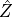
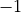
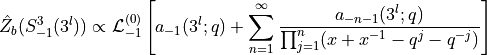
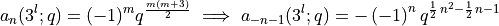

Example 5.3.1
In this notebook we demonstrate the computation of the  invariant through knot surgery. In this example we will compute  surgery on the left handed trefoil, and  surgery on the left handed trefoil which will lead to expressions for the invariants for
surgery on the left handed trefoil which will lead to expressions for the invariants for  and .
and .
Following equation 2.14 the invariant of can be obtained by:

which, with

implies, together with equation 2.16 that the should be given by
[3]:
from sage.combinat.q_analogues import q_pochhammer
q = var('q')
def habiro_3l(m):
return (-1)**m*q**(m*(m+3)/2)
def habiro_3r(m):
return (-1)**m*q**(-m*(m+3)/2)
zhat_235 = -1/q + sum(habiro_3l(-n-1) * q**(n**2)/q_pochhammer(n,q**(n+1)) for n in range(1,5))
(-q*zhat_235).series(q, 20)
[3]:
1 + (-1)*q + (-1)*q^3 + (-1)*q^7 + 1*q^8 + 1*q^14 + Order(q^20)
Inserting a wilson line in representation  introduces a factor of
introduces a factor of

in the Laplace transform leading to
![\begin{split}
\hat{Z}_{b}(S^3_{-1}(3^{l}), W_{1}) &\propto \mathcal{L}^{(1)}_{-1}\left[\left(x^{\frac{1}{2}} + x^{-\frac{1}{2}}\right)\sum_{n=1}^\infty\frac{a_{-n-1}(3^{l};q)}{\prod_{j=0}^n(x+x^{-1}-q^j-q^{-j})}\right] \\
&= \mathcal{L}^{(1)}_{-1}\left[\left(x^{\frac{1}{2}} + x^{-\frac{1}{2}}\right)a_{-1}(3^{l};q) + \sum_{n=1}^\infty\frac{a_{-n-1}(3^{l};q)\left(x^{\frac{1}{2}} + x^{-\frac{1}{2}}\right)}{\prod_{j=1}^n(x+x^{-1}-q^j-q^{-j})}\right] \\
&= 2q^{\frac{1}{4}}a_{-1}(3^{l};q) + \sum_{n=1}^\infty a_{-n-1}(3^{l};q)\mathcal{L}^{(1)}_{-1}\left[\frac{\left(x^{\frac{1}{2}} + x^{-\frac{1}{2}}\right)}{\prod_{j=1}^n(x+x^{-1}-q^j-q^{-j})}\right] \\
&= 2q^{\frac{1}{4}}a_{-1}(3^{l};q) + \sum_{n=1}^\infty a_{-n-1}(3^{l};q)\frac{q^{n^2-n+\frac{1}{4}}}{(q^n;q)_n}\\
\end{split}](../_images/math/8a3e8d457303de3ba0065ffe6013ee515d37f3b8.png)
[31]:
zhat_235w1 = 2*q**(1/4) + -sum(habiro_3l(-n-1) * q**(n**2-n+1/4)/q_pochhammer(n,q**(n)) for n in range(1,10))
(zhat_235w1*q**(3/4)).series(q, 20)
[31]:
(-1) + 1*q + (-1)*q^2 + (-1)*q^4 + 1*q^11 + 1*q^15 + 1*q^18 + Order(q^20)
We can compare the results above with the same computed with the plumbing definition:
[32]:
from pyPlumbing import Plumbing
P = Plumbing.from_Brieskorn([2,3,5]).invert_orientation()
b0 = P.trivial_spin_c(['A',1])
zh = P.zhat(['A',1], b0,20)
print(zh)
w = [vector([0])] * 3 + [vector([1])]
zh = P.zhat(['A',1], b0,20, wilson = w)
print(zh)
q^(-3/2)(1 - 1q^(1) - 1q^(3) - 1q^(7) + 1q^(8) + 1q^(14) + 1q^(20) + O(q^21))
q^(-5/4)(1 - 1q^(1) - 1q^(2) - 1q^(4) + 1q^(11) + 1q^(15) + 1q^(18) + O(q^19))
These match up to a finite polynomial.
We can compute the same on the other side by inverting both the surgery and the chirality of the knot. In this case, following equations 2.21 and 2.25, we combine the surgery formula together with the Habiro coefficients of the right handed trefoil to compute the predicted invariant for the positive oritentation plumbed manifold.
[33]:
print((1 + sum(-1/q*habiro_3r(-n-1) * (-1)**n * q**(n*(n+1)/2) /q_pochhammer(n,q**(n+1)) for n in range(1,10))).series(q,10))
print((sum(-1/q**2*habiro_3r(-n-1) * (-1)**n * q**(n*(n+1)/2) /q_pochhammer(n,q**(n)) for n in range(1,12))).series(q,10))
1 + 1*q + 1*q^2 + 2*q^3 + 1*q^4 + 3*q^5 + 2*q^6 + 3*q^7 + 3*q^8 + 5*q^9 + Order(q^10)
1 + 2*q + 2*q^2 + 3*q^3 + 3*q^4 + 4*q^5 + 4*q^6 + 6*q^7 + 5*q^8 + 7*q^9 + Order(q^10)
Which match the order 5 mock theta functions of Ramanujan
[23]:
def X0_ramanujan(n_max: int = 10, q_var = var('q')):
return sum(q**n/q_pochhammer(n,q**(n+1),q) for n in range(0,n_max+1))
def X1_ramanujan(n_max: int = 10, q_var = var('q')):
return sum(q**n/q_pochhammer(n+1,q**(n+1),q) for n in range(0,n_max+1))
print("X0: ",X0_ramanujan().series(q,20))
print("X1: ",X1_ramanujan().series(q,20))
X0: 1 + 1*q + 1*q^2 + 2*q^3 + 1*q^4 + 3*q^5 + 2*q^6 + 3*q^7 + 3*q^8 + 5*q^9 + 3*q^10 + 5*q^11 + 4*q^12 + 6*q^13 + 6*q^14 + 8*q^15 + 6*q^16 + 11*q^17 + 10*q^18 + 12*q^19 + Order(q^20)
X1: 1 + 2*q + 2*q^2 + 3*q^3 + 3*q^4 + 4*q^5 + 4*q^6 + 6*q^7 + 5*q^8 + 7*q^9 + 8*q^10 + 8*q^11 + 8*q^12 + 11*q^13 + 11*q^14 + 14*q^15 + 14*q^16 + 17*q^17 + 18*q^18 + 22*q^19 + Order(q^20)